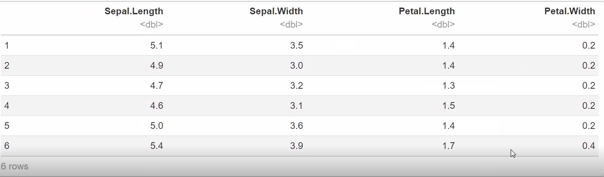
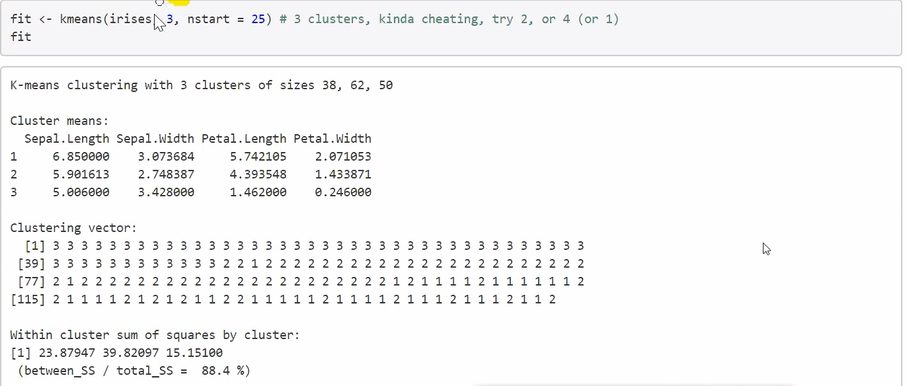
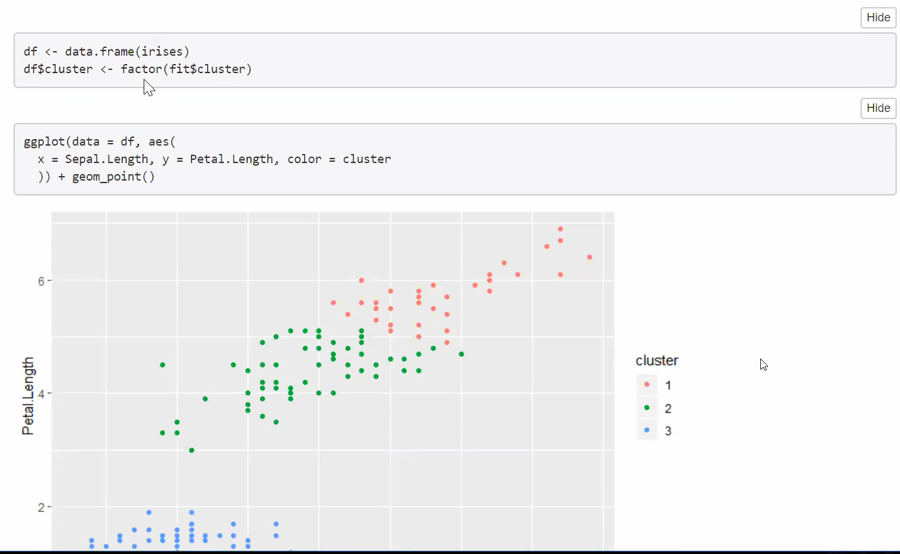

Week3 聚类
K-mean 和 EM聚类介绍
There is no single best clustering algorithm and all of them have limitations. This means it is
very important to visualise the results and see if the clustering is sensible, or to compare
different clusterings. K-means Clustering iteratively computes the centroid of each cluster while the EM
(Expectation-Maximization) Algorithm iteratively refines the unknown parameters of a Gaussian
distribution model for the clusters and at each step computing the likelihood each item belongs
to a particular cluster. In this case the EM algorithm performs better, giving a result closer to
the known clustering shown on the left.
聚类算算代码
library(ggplot2)

原数据

进行聚类计算

结果展示与输出
还有一个聚类的操作例子，详见Week3视频最后部分。